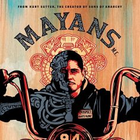
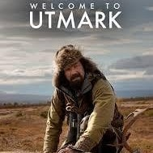

Estrenos HBO
MAYANS M.C (temporada 3)

Mayans M.C. es el nuevo capítulo de la saga de Hijos de la anarquía. La serie está ambientada en un mundo pos Jax Teller, donde Ezekiel "EZ" Reyes acaba de salir de la cárcel y entra en el club de los Mayans como novato, en la frontera entre México y California. Ahora EZ debe forjar su nueva identidad en una ciudad en la que el sueño americano pudo ser suyo.Prevista para 17 marzo 2021.
Genera+ion (temporada 1)
Genera+ion es una oscura pero divertida serie de media hora que sigue a un grupo diverso de estudiantes de secundaria cuya exploración de la sexualidad moderna (con dispositivos y todo) pone a prueba algunas creencias profundamente arraigadas sobre la vida, el amor y la naturaleza de la familia en una comunidad conservadora. Prevista para 11 marzo 2021
Bienvenidos a utmark (temporada 1)

Todo el mundo conoce a todo el mundo en este rincón apartado al norte del norte. Pero los elementos en Utmark son extraños y salvajes, y a los extranjeros no siempre les va bien. Cuando una nueva y optimista maestra se muda al pueblo, llega con la esperanza de empezar de nuevo, pero pronto se dará cuenta de que la única persona que se comporta de forma remotamente madura en este pueblo es una niña de 12 años. Prevista para el 18 de abril.
MARE OF EASTTOWN (temporada 1)
Esta serie limitada está protagonizada por Winslet en el papel de Mare Sheehan, una detective de un pequeño pueblo de Pensilvania que investiga un asesinato local mientras la vida se desmorona a su alrededor. Esta serie es una exploración del lado oscuro de una comunidad unida y una revisión de cómo la familia y las tragedias del pasado pueden definir nuestro presente.Prevista para 19 de abril.
HBO no sólo fue el primer canal en ser transmitido vía satélite desde su lanzamiento en Latinoamérica, sino el primero en tener canales multiplex, incorporar tecnología digital de alta definición, grabar en 4K, lanzar una plataforma digital y un servicio “a la carta”.
La generación millennial ya no quieren estar sujetos a un televisor. Ellos son libres y quieren disfrutar donde sea, por eso lanzaron su plataforma HBO GO. Ya no necesitas tener televisión por cable, vaya, ni siquiera un televisor.
El Peabody Award premia la excelencia en radio, televisión y online con base en su calidad, no su popularidad. HBO lo ganó por el documental She’s Nobody’s Baby, de 1981, sobre la evolución del rol femenino durante el siglo XX.